Adır Adası
Adır Adası ya da eski adı ile Lim adası Van Gölü’nün kuzey bölümünde yer alan ve yaklaşık 1 km2 (bir uçtan diğerine 2,41 km, genişliği ise en geniş noktada yaklaşık 670 m) büyüklüğünde bir adadır. Adanın karaya en yakın noktası ile ada arası yaklaşık 1,74 km’dir.
Adaya en yakın liman Halkalı ile Yaylıyaka köyleri arasında yer alıyor. Yaklaşık 15-20 dk’lık bir sefer ile adaya ulaşılabiliyor. Adada martı ve yılan haricinde bir hayvana rastlamadık. Ada zemini üzerinde yetişen otların gür olması ve ezilmemiş olması nedeni ile oldukça yumuşak ve yürümesi oldukça yorucu. Adada bol miktarda badem ağacı bulunuyor, bu ağaçların yanında adada kara dut ve alıç ağaçları da bulunuyor.
Ada üzerinde eski bir yerleşime ait kalıntılar bulunuyor. Bu kalıntıların merkezinde ise bugün sadece bir bölümü ayakta kalan bir kilise yer almaktadır. Adada 2 adet de su kuyusu görebildik, 4 tane olduğu söyleniyor. Adada bir de mezarlık bulunmaktadır.
Adanın tarihine baktığımızda çeşitli kaynaklarda adanın yazma eserler barındıran önemli bir kütüphaneye (Lim Manastırı) ev sahipliği yaptığı, bunun yanında yatılı olarak eğitim verilen bir manastıra sahip olduğu anlatılmaktadır. Adanın bir dönem köylüler tarafından koyun otlatma amacıyla yayla olarak da kullanıldığı yine anlatılagelmektedir.
Adada gezerken çok sayıda martı ölüsü gördük, bunun nedenini merak ettik açıkçası ama net bir çıkarım yapamadık.
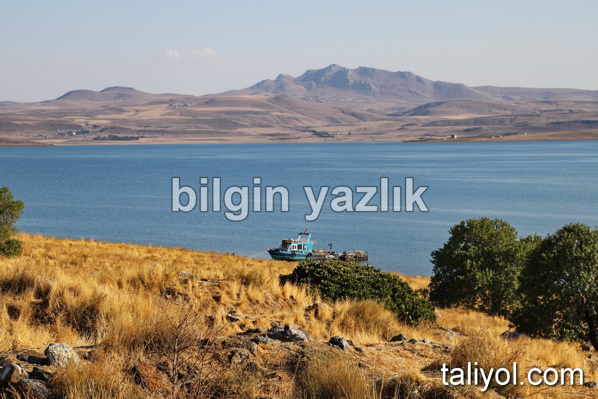
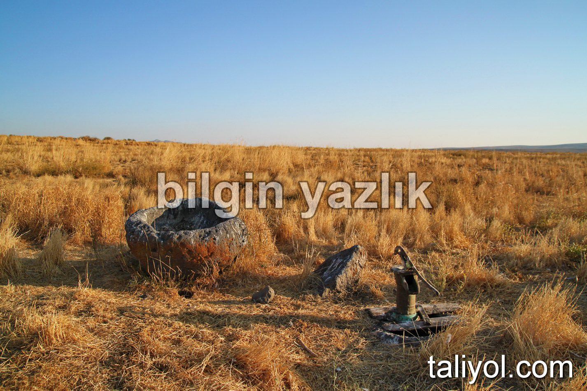
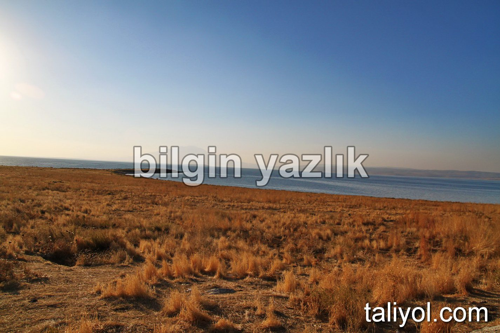
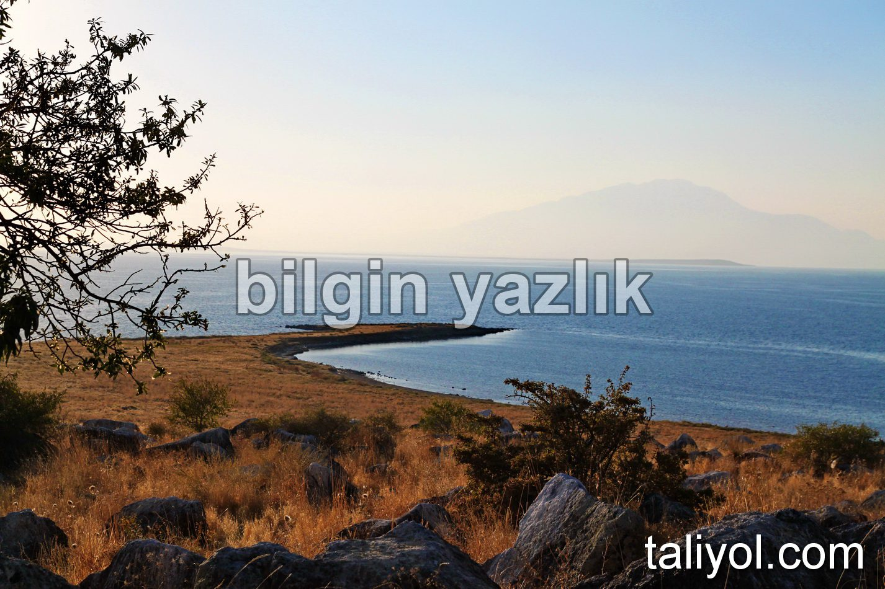
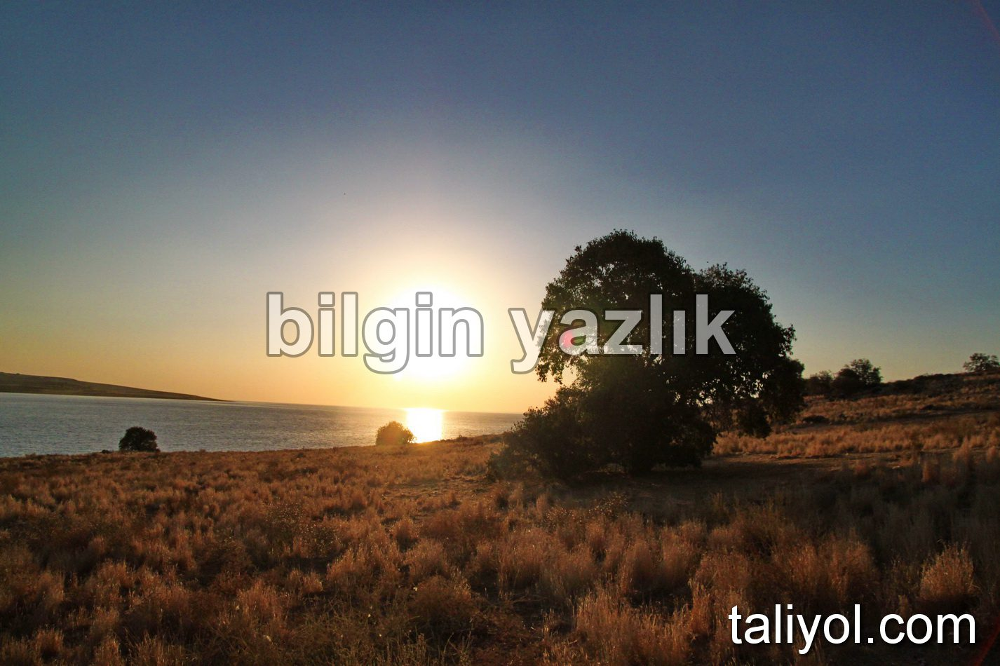
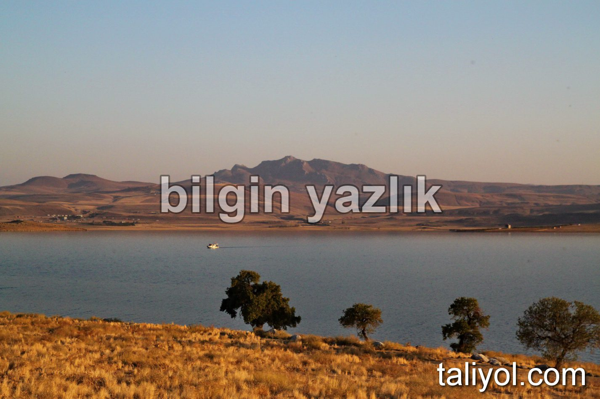
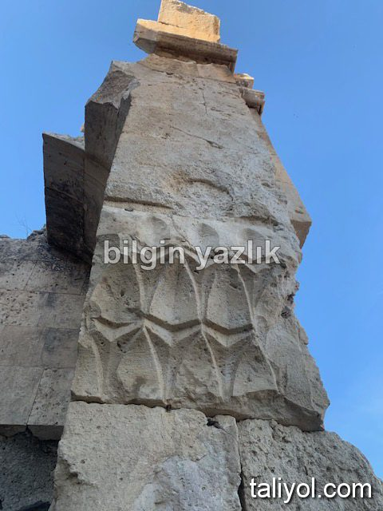
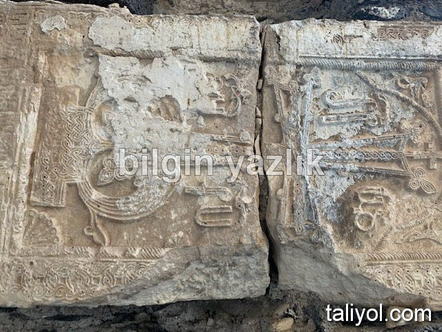
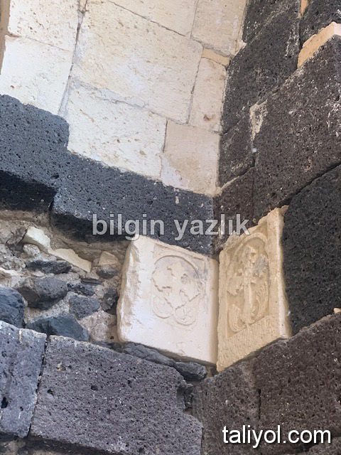
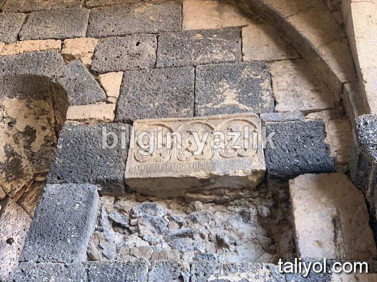
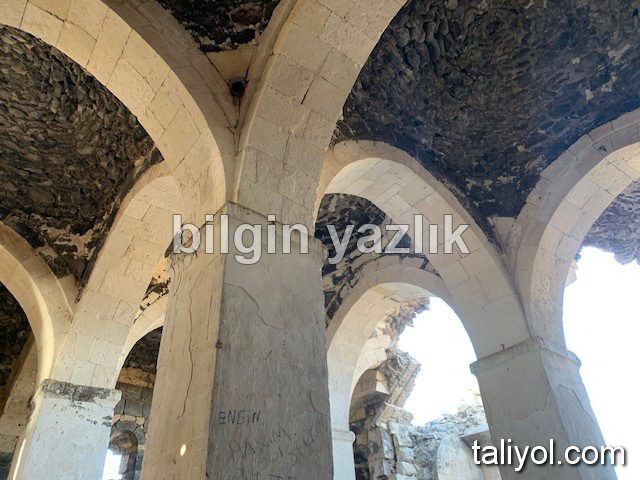
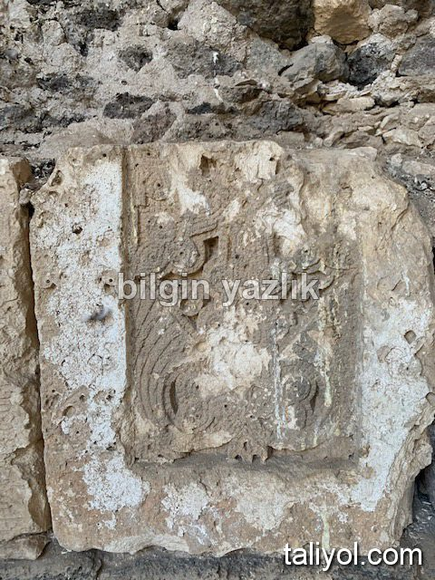
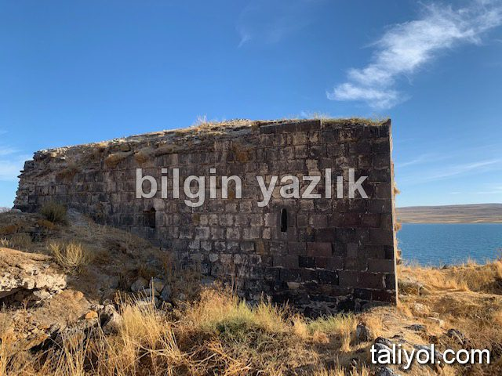
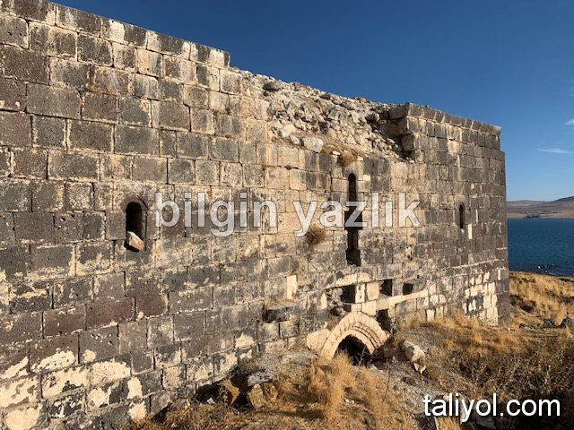
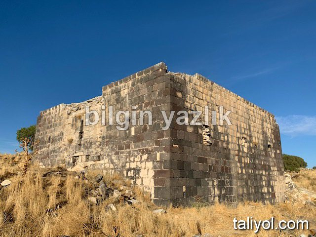
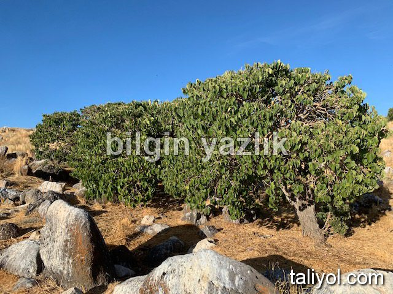
Bu yazı taliyol arşivinden taşınmıştır. · özgün kayıt